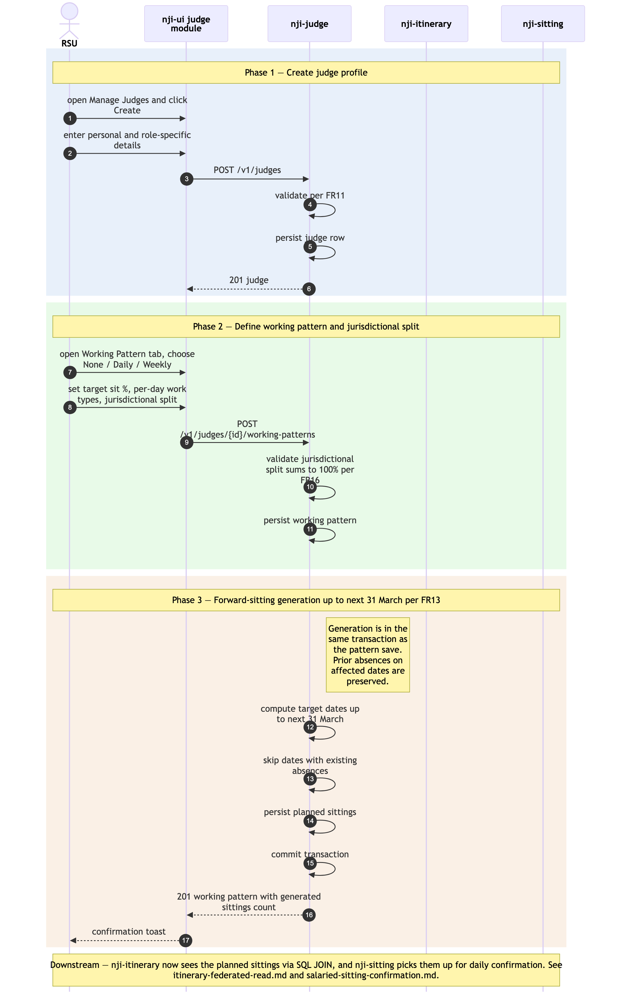

Judge onboarding + working-pattern-driven sitting generation
Sequence diagram of how a new judge is onboarded into NJI and how that judge's working pattern automatically populates planned sittings up to the next 31 March. This is the upstream of every downstream operational flow — absences, vacancies, bookings, sittings, payments, itineraries all depend on the judge records and planned sittings produced here.
The as-is equivalent is Module 2 Manage Judges in ../../../docs/architecture/asis/functional-modules.md
and Integration Flow 1 Judge Master Data (eLinks / HR → JI) in
../../../docs/architecture/asis/integration-dependencies.md.
In the as-is system the data is copied in manually from eLinks and HR
records and JI auto-overwrites future sittings on pattern save. NJI
keeps the same business behaviour but with explicit API contracts and
DB-level constraints.
Three phases: (1) judge profile create; (2) working pattern + jurisdictional split; (3) forward-sitting generation up to next 31 March.
Not in this diagram
- eLinks / HR system integration — neither in as-is nor in NJI MVP (NFR24 / Risk #1 in PRD). Judge data continues to be entered manually by RSU.
- Cross-Region base-location change (FR17) — out-of-system; requires OPT Advice Point in the as-is and a programme decision in NJI.
- Off-circuit / cross-Region judge linking for
bookings (FR18) — handled as a read-only link in
./itinerary-federated-read.md, not in this flow. - Editing an existing working pattern — same shape as Phase 2 + Phase 3 but with prior-absence preservation logic; not drawn separately to keep the diagram lean. The architectural rule (preserve prior absences when regenerating sittings, FR13) is the same.
- Ticket maintenance (FR15) — a small follow-up CRUD operation; same shape as Phase 1.
Cross-cutting steps omitted for clarity
- Authentication + per-request authorisation — Sys
Admin / RSU's JWT is validated by each service's
JWTFilterand resolved againstnji-authorisationon every call. See./user-authentication-and-authorisation.md. - All UI → service calls flow through Azure API Management.
- Validation errors at any step return RFC 9457 problem-details and the user retries; not drawn explicitly.

Source: ./judge-onboarding-and-sitting-generation.mmd
(Mermaid). Regenerate with
mmdc -i judge-onboarding-and-sitting-generation.mmd -o judge-onboarding-and-sitting-generation.png -w 2400 -s 2 --backgroundColor white.
Phase summary
| Phase | Driver | Architectural rule | Outcome |
|---|---|---|---|
| 1 — Judge profile create | RSU (Full Access) | FR11 — judge profile fields validated; role-specific data captured | Judge persisted in judges table; active/inactive status
set |
| 2 — Working pattern + jurisdictional split | RSU | FR12 + FR16 — pattern type (None / Daily / Weekly), target sit %, per-day work types; jurisdictional split percentages must total exactly 100% | Working pattern persisted in working_patterns table
linked to the judge |
| 3 — Forward-sitting generation | nji-judge (server-side, in-transaction with pattern
save) |
FR13 — auto-populate planned sittings up to the next 31 March, preserving any prior absences on the affected dates | sittings rows in planned status for the
judge over the generation horizon; visible to nji-sitting
for confirmation flows and to nji-itinerary for read
federation |
Where to find more detail
| Detail | Location |
|---|---|
nji-judge repo purpose and key functions |
../repository-strategy.md
Phase 1 row |
| Working-pattern semantics (None / Daily / Weekly; target sit %; jurisdictional split) | PRD FR12, FR13, FR16; Module
2 in ../../../docs/architecture/asis/functional-modules.md |
judges, working_patterns,
sittings tables (column-level detail) |
../data-tables.md |
| Judge UI module structure | ../repo-structure.md →
nji-ui/src/modules/judge/ |
Why this flow is in nji-ui and not
nji-admin-ui (RSU operational vs admin) |
../../architecture.md
→ Step 4 Frontend Architecture — v2.10 |
| Downstream consumers — Itinerary read federation | ./itinerary-federated-read.md |
| Downstream consumers — Sitting confirmation flow | ./salaried-sitting-confirmation.md |
| As-is equivalent (Module 2 Manage Judges; manual eLinks/HR entry) | ../../../docs/architecture/asis/functional-modules.md
→ Module 2; ../../../docs/architecture/asis/integration-dependencies.md
→ Flow 1 |
Source: _bmad-output/planning-artifacts/architecture/sequence-diagrams/judge-onboarding-and-sitting-generation.md